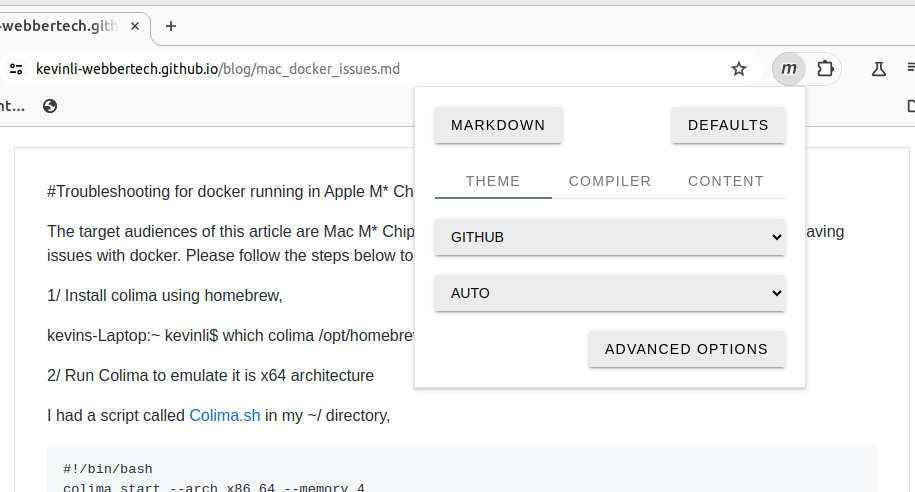
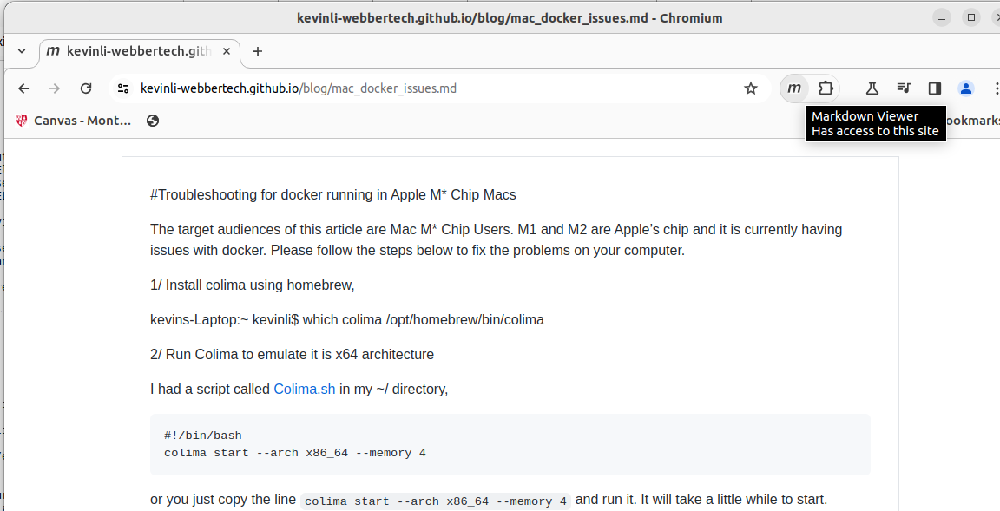

markdown viewer
Most files in my blog are written in markdown file. I do not have backend to convert markdown to html To better read the markdown file of my blog, please install Markdown viewer plugin in your broswer. Here is a link of google chrome plugin,https://github.com/simov/markdown-viewer#table-of-contents
Enable this plugin and show it in your browser tool bar, and configure advanced options. Then it will look like the following,
